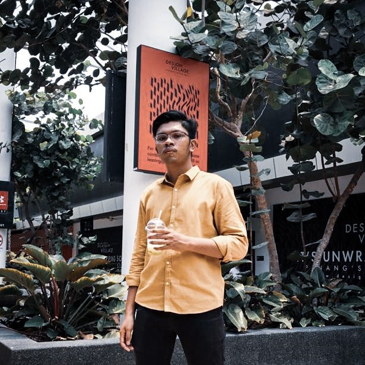

|

|
A STUDENT WITH A LOT OF PASSION
As a full-time diploma student, I have a lot of commitment.
But that did not deny my right to have a lot of passion. I
mainly love technology and arts, especially art involving
music. Music makes me feel light-headed whenever I feel
anxious about myself. I find it is a kind gesture when
someone shares their music taste with me. Mainly because as
a human being we all have things that we like and does not
in a lot of things but when I can see what kind of music
someone love that can give me a different perspective of
life. Perhaps music is one of the ways that I can use to
show my affection towards someone. Other than that, I also
did a few short vlogs and also a short drama. Even though my
major is Computer Science, I firmly believe that we can not
just focus on one thing to be a successful person. We do need
to have at least a hobby that can make us get through
obstacles in life.
|